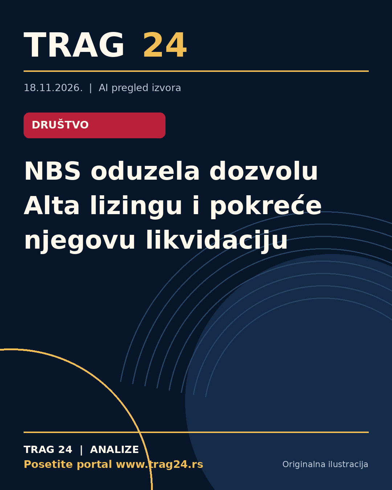

NBS oduzela dozvolu Alta lizingu i pokreće njegovu likvidaciju

ŠTA SE DOGODILO
Narodna banka Srbije (NBS) je oduzela dozvolu za rad Alta lizingu, društvu koje se bavi finansijskim lizingom, jer je njegov jedini vlasnik, Alta banka, ušla u stečaj. Kao rezultat toga, NBS je utvrdila da su ispunjeni uslovi za pokretanje postupka likvidacije Alta lizinga, a ne stečaja, jer imovina Alta lizinga premašuje obaveze.
HRONOLOGIJA
Alta banka je prvo otišla u stečaj, nakon čega je NBS odlučila da oduzme dozvolu za rad Alta lizingu. Potom je izvršni odbor NBS doneo odluke o zabrani raspolaganja imovinom Alta lizinga do otvaranja likvidacionog postupka pred Privrednim sudom u Beogradu. Agencija za osiguranje depozita će preuzeti funkciju likvidacionog upravnika nakon što sud donese rešenje.
ŠTA NAVODE IZVORI
Izvori Vremena i Nove.rs detaljno navode da Alta lizing nije banka i da ne prima depozite građana i privrede, te da oduzimanje dozvole ne ugrožava stabilnost finansijskog sistema Srbije. NBS je ukazala da Alta banka, kao jedini vlasnik, nije ispunjavala uslove zakona u pogledu finansijskog stanja i poslovne reputacije. Informer izveštava o oduzimanju dozvole, ali u tom tekstu nema dodatnih informacija o Alta lizingu, fokus je na druge teme.
ŠTA JE POTVRĐENO
Potvrđeno je da je NBS oduzela dozvolu Alta lizingu i da je započet postupak likvidacije, a ne stečaja. Takođe je potvrđeno da postojeća prava i obaveze prema Alta lizingu ostaju na snazi i da dužnici moraju nastaviti redovno plaćanje ugovorenih obaveza. Zabranjeno je zaključivanje novih ugovora o finansijskom lizingu od dana upisa rešenja o oduzimanju dozvole. Uplate se i dalje vrše na račun kod AIK banke.
ŠTA NIJE POTVRĐENO
Nije potvrđeno da će likvidacija negativno uticati na korisnike lizinga, niti postoji pouzdana informacija o daljim mogućim posledicama po korisnike. Nema podataka o tome kako će se individualni ugovori rešavati u postupku likvidacije niti konkretnim planovima agažovanja poverilaca i korisnika tokom likvidacije.
ŠTA OSTAJE OTVORENO
Ostaje nejasno koliko dugo će trajati likvidacioni postupak Alta lizinga i na koji način će se realizovati prava korisnika. Potrebno je pratiti dalja zvanična saopštenja Agencije za osiguranje depozita i Privrednog suda u Beogradu. Takođe ostaje pitanje eventualnih uticaja na tržište finansijskog lizinga u Srbiji s obzirom na ovu promenu statusa Alta lizinga.
Izvori
- https://vreme.com/razno/nbs-oduzela-dozvolu-alta-lizingu-sta-ce-biti-sa-postojecim-ugovorima/
- https://nova.rs/vesti/biznis/nbs-oduzela-dozvolu-alta-lizingu/
- https://informer.rs/drustvo/vesti/1170983/nbs-alta-banka-lizing
Ova analiza je pripremljena uz pomoć veštačke inteligencije na osnovu javno dostupnih izvora. Navodi izvora nisu nužno nezavisno potvrđeni.